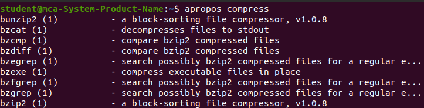
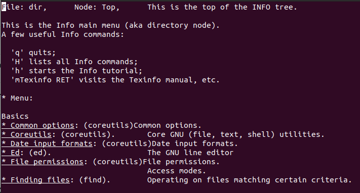
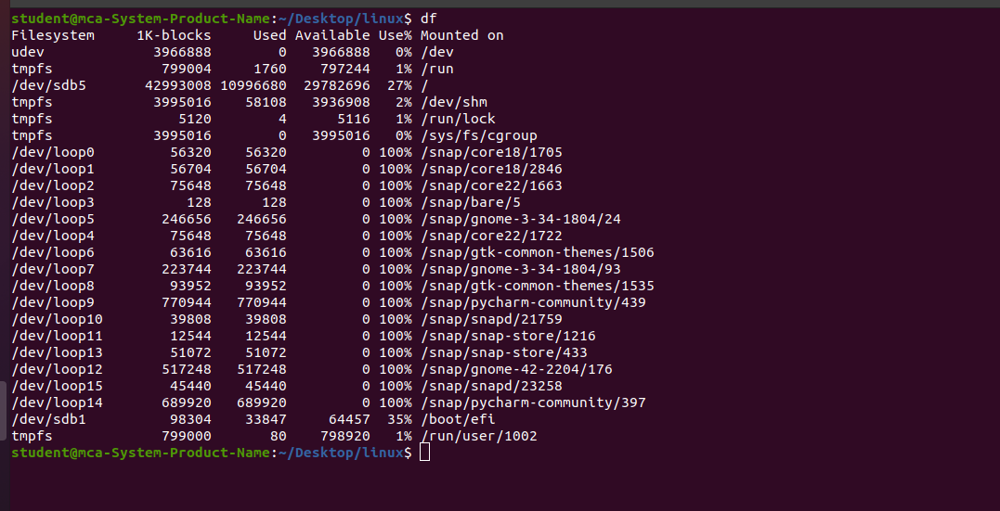
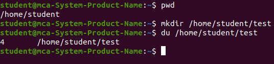
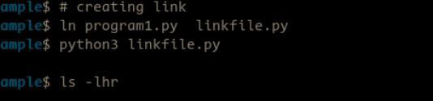
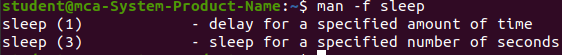

INTRODUCTION OF LINUX
Linux is an open-source Unix-like operating system-based family on the Linux kernel, and the OS kernel was first published on 17 September 1991 by Linus Torvalds.
Typically, Linux is packaged as the Linux distribution, which contains the supporting libraries and system software and kernel,
several of which are offered by the GNU Project. Several Linux distributions use the term "Linux" in the title,
but the Free Software Foundation uses the "GNU/Linux" title to focus on the necessity of GNU software, causing a few controversies.
Famous Linux distributions are Ubuntu, Fedora Linux, and Debian, the latter of which is composed of several different modifications and distributions,
including Xubuntu and Lubuntu. Commercial distributions are SUSE Linux Enterprise and Red Hat Enterprise Linux.
Desktop distributions of Linux are windowing systems like Wayland or X11 and desktop environments like KDE Plasma and GNOME..
TYPES OF HELP& INFORMATION COMMANDS IN LINUX
Apropos
Info
Alias
Uname
Df
Du
Mount
Ln
Man
Apropos Command
Explanation: The apropos command in Linux searches the system's manual pages for commands that match a keyword or task.apropos command helps the user when they don't remember the exact command but knows a few keywords related to the command that define its uses or functionality. It searches the Linux man page with the help of the keyword provided by the user to find the command and its functions.
syntax:apropos [OPTION..] KEYWORD..
Purpose: The apropos command in Linux helps users find commands by searching the system's manual pages (man pages) for keywords or string.
Usage Example: apropos network
Use Case: Suppose you're working on networking tasks but don’t know the exact command to use. Typing `apropos network` will return all commands related to networking (e.g., `ifconfig`, `ping`, `ip`, etc.), along with their descriptions. This is extremely helpful when exploring new topics.
Screenshot:

Info Command
Explanation: The `info` command opens up a more detailed and structured help system, offering both high-level and in-depth descriptions of a command. Unlike `man`, which presents the content in a more linear format, `info` allows you to navigate through sections easily. It includes example usage and related information on options and flags.
syntax:info [OPTION]... [MENU-ITEM...]
Purpose: Provides detailed and structured documentation about commands, especially for GNU utilities.
Usage Example: info ls
Use Case: When you need more context or detailed usage instructions for a command, such as `info ls`, this will give you a breakdown of all the available options and provide a deeper understanding of the command compared to `man` pages.
screenshot:

Alias Command
Explanation: An alias is a user-defined shorthand for a longer command or sequence of commands.
These aliases can be created and customized according to user preferences, making the command-line interface more user-friendly.
The alias command instructs the shell to replace one string with another string while executing the commands.
When we often have to use a single big command multiple times, in those cases, we create something called an alias for that command.
Alias is like a shortcut command, which will have the same functionality as if we were writing the whole command. .
syntax: alias shortname='longer command'
Purpose: Creates shortcuts for long or frequently used commands, allowing for quick execution.
Usage Example: alias ll='ls -l'
Use Case: Alias is incredibly helpful when you often run the same commands. For instance, creating `alias update='sudo apt update && sudo apt upgrade'` helps speed up system updates by avoiding repetitive typing.
screenshot:

Uname Command
Explanation: The `uname` command provides essential details about your system. It includes the kernel version, system name, machine type, and other identifying features. The `-a` flag displays all available information in a single output.
Syntax:uname [OPTIONs]
Purpose: Displays basic system information, such as the operating system, kernel version, and architecture.
Usage Example: uname -a
Use Case: This command is helpful when troubleshooting hardware compatibility issues, identifying the Linux distribution, or verifying which kernel version is running on your machine. For example, `uname -r` will show the kernel version, which can be crucial when installing or configuring software.
Screenshot:

Df Command
Explanation: The `df` command is used to display disk space usage for mounted filesystems. By default, it shows the space in 1KB blocks, but the `-h` flag makes it more user-friendly by showing human-readable units like KB, MB, or GB.
Syntax:df [options] [filesystems]
Purpose: Displays the available and used disk space on all mounted filesystems.
Usage Example: df -h
Use Case: This command is vital for system administrators who need to monitor available disk space on their servers. It helps ensure that file systems don’t run out of space, which could cause system issues. You can also use it to check individual partitions, such as `df /home`.
screenshot:

Du Command
Explanation: The `du` command gives a summary of the disk usage for files and directories. The `-h` flag converts the output to human-readable formats (e.g., MB, GB), while the `-s` flag gives only the total size of the specified directory or file.
Syntax:du [options] [directory/file]
Purpose: Estimates and shows the disk usage of files and directories.
Usage Example: du -sh /home/user
Use Case: Use `du` to track the disk space used by a directory or file. If your disk is filling up and you need to identify large files or directories, `du -sh /var/log` can show where most space is being used.
Screenshot:

Mount Command
Explanation: The `mount` command is used to attach storage devices (like external hard drives or USBs) to directories in your system, making their contents accessible. For example, `mount /dev/sdb1 /mnt` mounts the device `/dev/sdb1` to the `/mnt` directory, making it available for use.
Syntax:mount -t type
Purpose: Mounts a storage device or filesystem to a specific directory in the file system tree.
Usage Example: mount /dev/sdb1 /mnt
Use Case: Use `mount` when adding new filesystems to your system, such as connecting a USB drive or an additional hard drive. You can specify the file system type and mount options to customize the behavior.
screenshot:

Ln Command
Explanation: The `ln` command creates links between files. A symbolic (soft) link is like a shortcut to a file, while a hard link is essentially an additional name for the same file. Symbolic links are commonly used to link files across different directories, while hard links are often used for backup purposes.
Syntax:ln [OPTION]... [-T] TARGET LINK_NAME
ln [OPTION]... TARGET... DIRECTORY
ln [OPTION]... -t DIRECTORY TARGET...
Purpose: Creates hard or symbolic (soft) links to files or directories.
Usage Example: ln -s /path/to/file /path/to/link
Use Case: Use `ln` when you need to create shortcuts or references to files without duplicating data. For example, create a link to a frequently accessed configuration file in your home directory using `ln -s /etc/config.conf ~/config.conf`.
screenshot:

Man Command
Explanation: The `man` command provides detailed information about system commands, including syntax, options, and examples. It is the standard help system on Unix-like systems and is often the first place users check when they need to learn how to use a command.
Syntax:man [option] [command]
Purpose: Displays the manual page for a specified command, providing syntax and usage details.
Usage Example: man ls
Use Case: `man ls` will provide you with a comprehensive guide to using the `ls` command, including all possible options for listing files. If you're uncertain about the usage of a command, `man` is your go-to tool.
screenshot:
